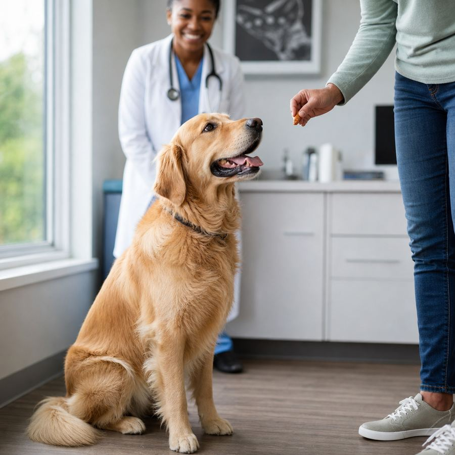

Dostunuz yeniden enerjik.
İnönü Caddesi'nde, Sahrayıcedit'te. Muayene ve tedavide dostunuzu eski enerjisine kavuşturmak için çalışıyoruz.
WhatsApp'tan yazın Yol tarifiSağlığı kayıt altında.
Aşıdan tahlile her şey dostunuzun kartında, zamanı gelince hatırlatırız.
Muayeneden tahlile, kayıtlı ve takipli
Genel muayene
Kilo, ateş, nabız; her ziyaret kayda geçer.
Aşı programı
Aşı karnesi ve zamanında hatırlatma.
Kısırlaştırma
Ön tahlil, operasyon ve dikiş kontrolü.
Laboratuvar
Kan tahlili ve temel testler.
Diş ve ağız
Diş taşı temizliği ve kontrol.
Parazit
İç-dış parazit uygulaması.
Liste klinikle birlikte netleştirilecek
Dostunuz ne sıklıkla kontrole gelmeli?
İnönü Caddesi'nde
Sahrayıcedit'te, İnönü Caddesi 38'deyiz. 10.00'dan 20.00'ye kadar açığız.
Her ziyaretin kaydını tutuyor, iyileşmeyi birlikte takip ediyoruz.
Dostunuz burada kendini evinde hisseder.
Fotoğraflar temsilidir; kliniğinizin kendi fotoğraflarıyla değiştirilecek.



Bir dakikada randevu.
Telefonda beklemek yok. Size uygun saati birlikte bulalım.
WhatsApp'tan yazın
Dostunuzun adını ve şikâyetini kısaca yazın; fotoğraf da gönderebilirsiniz.
Saatinizi verelim
Size bugün ya da yarın için uygun bir saat önerelim.
Dostunuzla gelin
Varsa aşı karnesini de getirin; gerisini biz hallederiz.
Aklınıza takılanlar.
Sorunuzun cevabı burada yoksa WhatsApp'tan yazın, hemen yanıtlayalım.
Randevusuz gelebilir miyim?
Gelebilirsiniz; ama önceden yazarsanız beklemeden muayene olursunuz. 10.00–20.00 arasında kapımız açık.
Kedimin, köpeğimin aşı takvimi nasıl olmalı?
Yavrularda karma aşılar genellikle 6-8. haftada başlar, kuduz aşısı 12. haftadan sonra yapılır; ardından yıllık hatırlatmalarla sürer. Dostunuzun yaşına ve yaşam şekline göre takvimi muayenede birlikte çıkarırız.
Kısırlaştırma için en uygun zaman ne?
Çoğu kedi ve köpekte 5-6 aylıktan sonra uygundur; ırk, kilo ve sağlık durumuna göre değişir. Ön muayene ve kan tahlilinden sonra en doğru zamanı birlikte belirleriz.
Acil bir durumda ne yapmalıyım?
Nefes darlığı, zehirlenme şüphesi, kanama ya da bilinç kaybı gibi durumlarda vakit kaybetmeden 0533 269 50 40 numarasından bizi arayın; size ne yapmanız gerektiğini hemen söyleyelim.